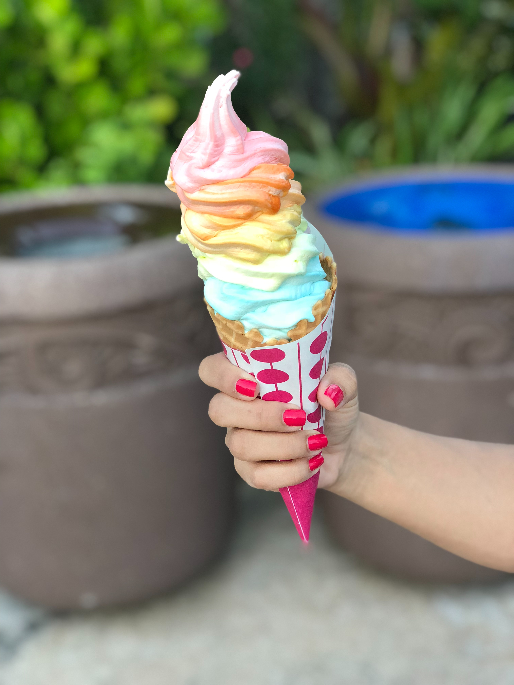

colors using reg values
G
o
o
g
l
e
color using hex code
Primary Color
light-primary color
dark-primary color
position relative and absulote
beautiful scenery 0f mountain
Mountain Pictures
Beautiful mountain
location: in the top of the mountain
left image(blur filter), center image(sepia filter),right image(invert filter)
class- activity4

OPI nail polish is a vegan nail polish
image1:invert image with text on the bottom
image2:image with text and a link
786 nail polish
786 is breathable nail polish allows nails to stay hydrated and moisturized
Barrier-free nail polish lets both water and air pass through the nail polish.
image3:invert filter with 3 texts